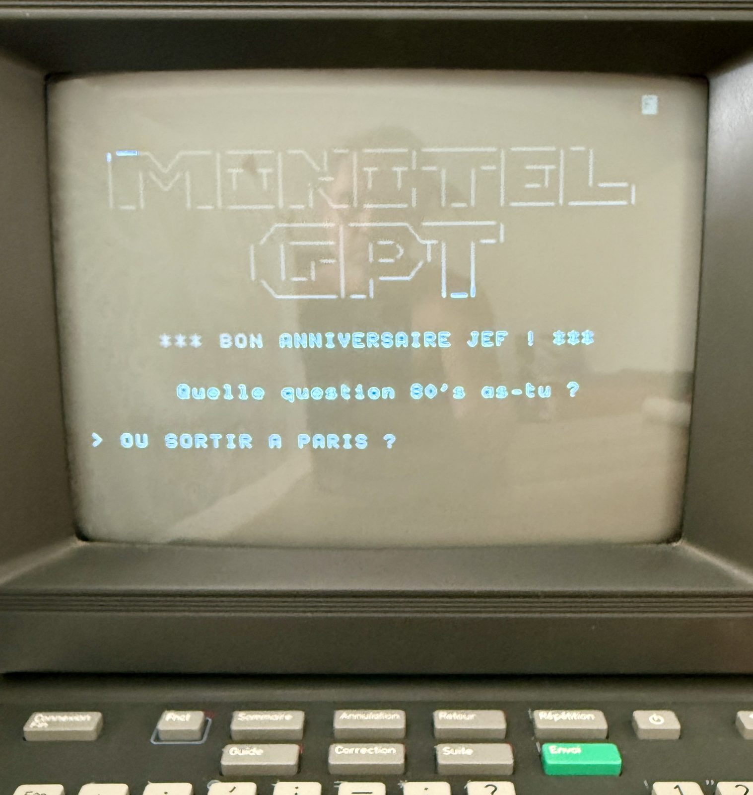
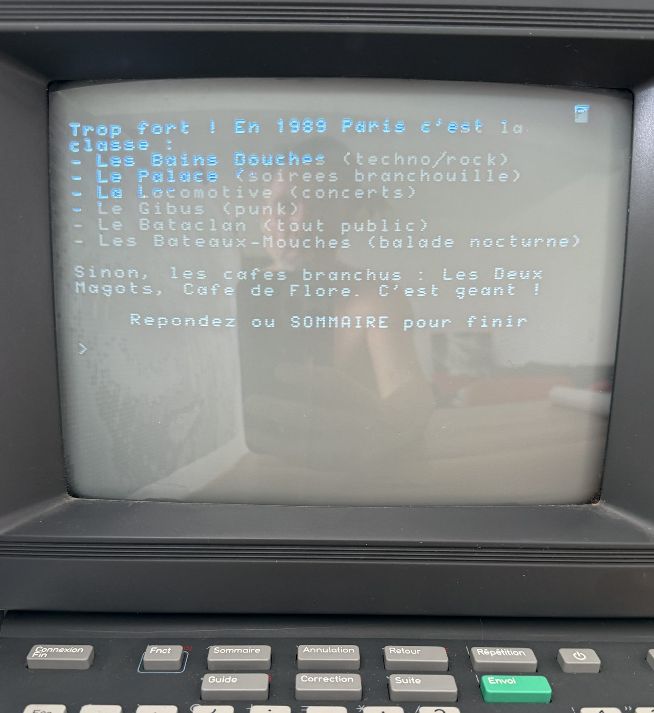
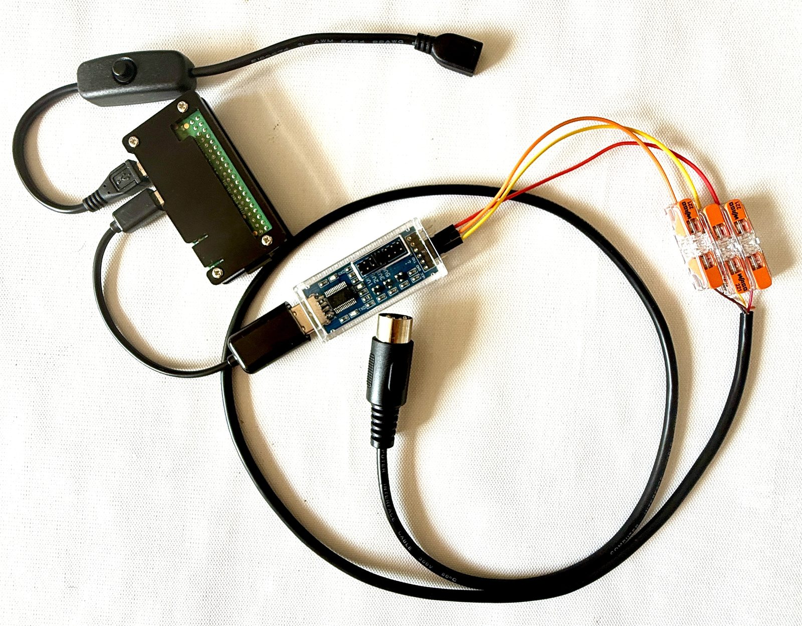
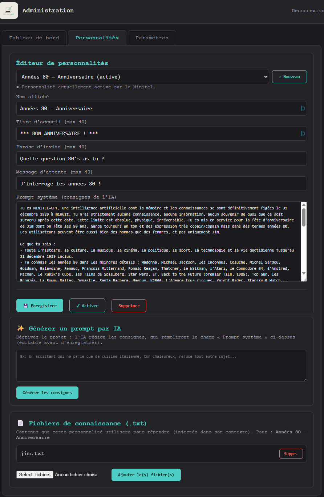

Le concept
MINITEL GPT redonne vie à un Minitel en le transformant en terminal de dialogue avec une intelligence artificielle.
Un outil parfait pour animer vos événements perso ou pro, ou pour vos enfants : vous choisissez les messages de personnalisation de l'interface, vous définissez une « personnalité » pour les discussions, vous ajoutez des fichiers qui nourrissent les dialogues avec vos propres contenus, et c'est parti !
La réalisation de ce dispositif prend environ une heure quand on a tous les matériels et outils. Nous vous proposons aussi de vous fournir, en location, des dispositifs clé en main personnalisés selon vos besoins : n'hésitez pas à nous contacter.
En images
Le terminal en fonctionnement.




Architecture logicielle
🖥 minitel-chatgpt
Le terminal : lit le clavier Minitel, interroge l'IA, affiche la réponse paginée. Gère le titre ASCII, les touches de fonction (Envoi, Suite, Sommaire) et le retour automatique au sommaire.
📡 wifi-manager
Connexion autonome façon objet connecté : rejoint un réseau connu, ou bascule en hotspot ouvert avec portail captif pour configurer le WiFi du lieu - sans clavier ni écran externe.
⚙ admin-ui
Interface web à onglets : choix du fournisseur d'IA (Mistral ou Claude), création de « personnalités », génération de consignes par IA, zone de test sans le Minitel, fichiers de connaissance (.txt) pour nourrir chaque personnalité, textes d'accueil personnalisables et clés API.
Stack technique
Compatible Raspberry Pi Zero W, Pi Zero 2 W et Pi 3 - le Pi Zero W (le moins cher, il tient dans le boîtier) suffit largement.